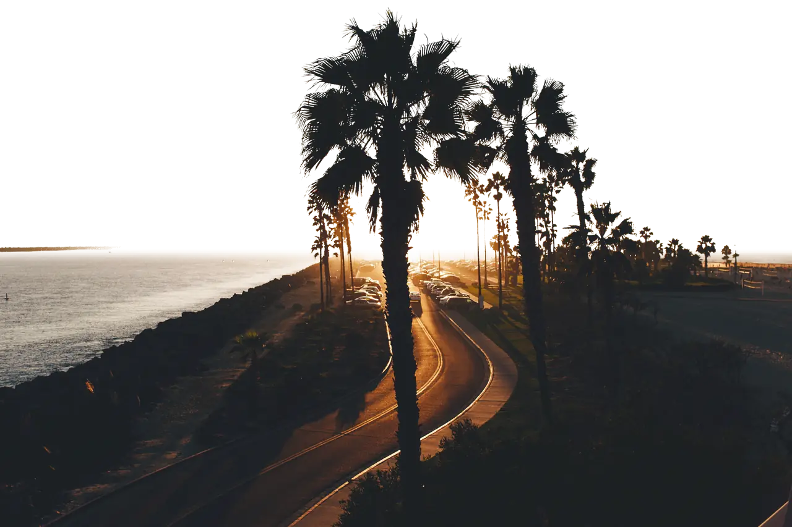
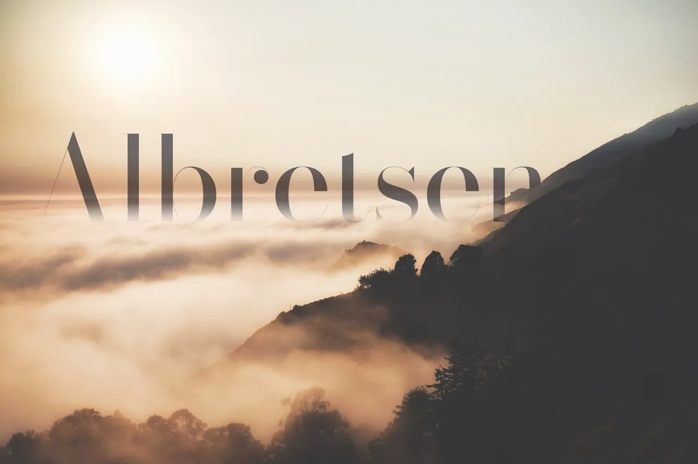
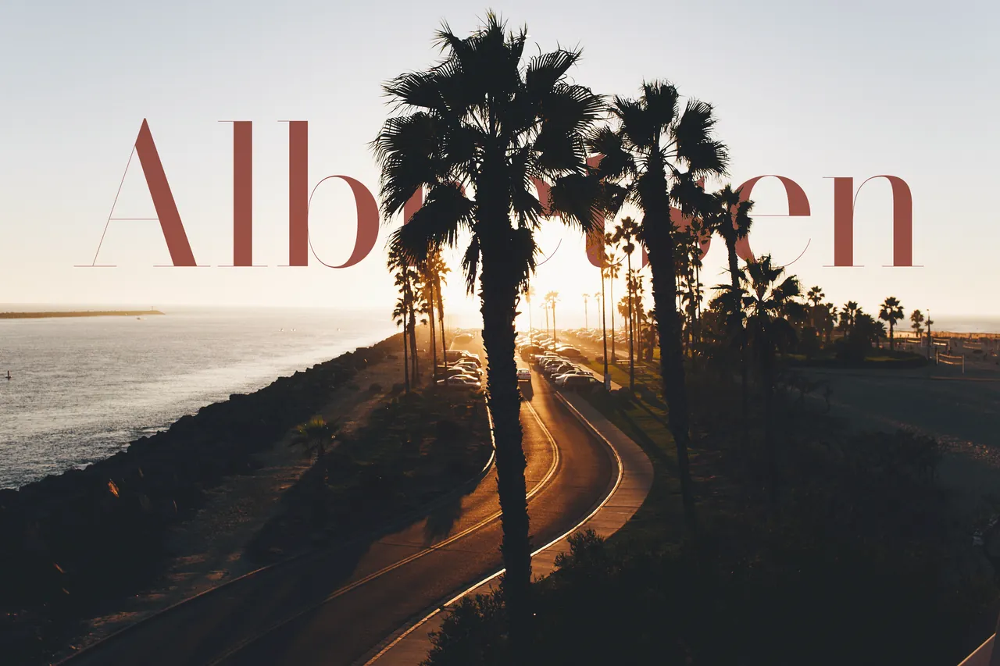
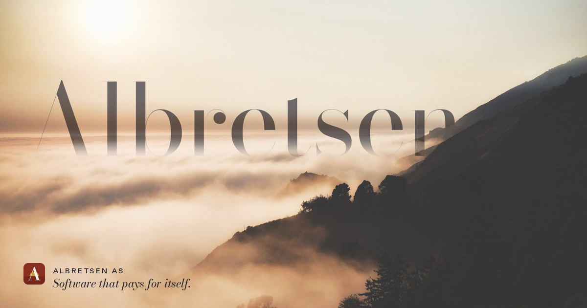
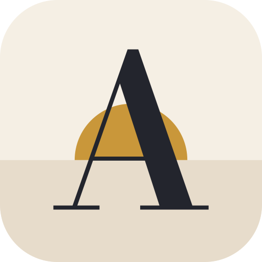
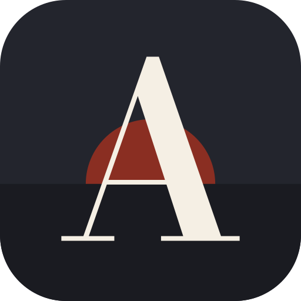
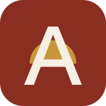
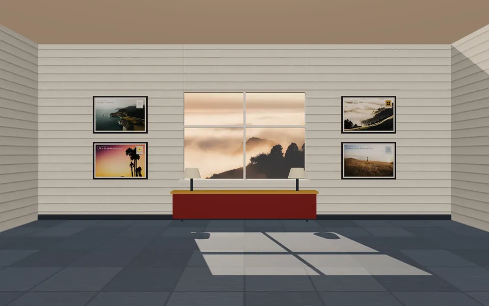
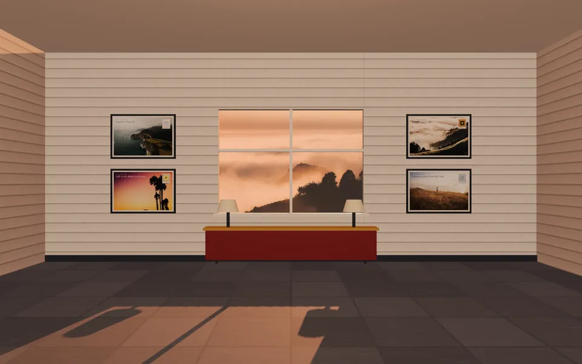

The Long Evening
California light seen through a Norwegian window. Golden hills, fog banks and palm-lined boulevards at the hour that never quite turns to night, kept in a small-town palette of white clapboard, falu red, ochre and slate. The name is set into the landscape, so it reads as part of the place. Products arrive as postcards. Motion is centred, lateral and deadpan.

hero/boulevard-* + boulevard-foreground-*
hero/*-named-*

identity/og-1200x630.jpgIdentity
The mark is a Bodoni A whose crossbar is the horizon. A low ochre sun sets exactly on it. The type is outlined in every file, so the marks render the same everywhere.




Palette
Norwegian small-town paint on Californian light. Clapboard white is the page and ink is the text. Falu red marks the one thing that matters on each screen. Ochre is the sun. Slate does the quiet work.
oklch(95.4% 0.016 82.8)
oklch(43.6% 0.128 30.4)
oklch(70.7% 0.123 79.6)
oklch(39.1% 0.021 256.4)
oklch(26.6% 0.015 274.3)
oklch(93.4% 0.021 79.1)
oklch(85.3% 0.048 53.6)
oklch(80.3% 0.117 80.1)
oklch(84.7% 0.020 220.9)
oklch(42.0% 0.023 278.9)
Type
Bodoni Moda, pinned to its 96 pt optical size, for display: high contrast with hairlines that catch the light. Schibsted Grotesk handles everything functional. It was drawn for a Norwegian newsroom, so it is quietly at home here. Both are OFL and self-hosted as Latin subsets (24–42 KB each).
Albretsen AS
Products, as postcards
Each live or building product is a postcard. The front carries a graded photograph and a stamp with the real product logo. Click a card to flip it. The back is live HTML with the product line, its facts and its address.
Retired, kept in the album


Live stamps use each product's real logo, unchanged: stamp-mcp-emails, stamp-fun-libs, stamp-toolrails, stamp-harbor. Retired stand-ins use a Bodoni initial on a muted ground. Luma uses its real logo.
The room, as the day passes
A three.js scene with dead-centre framing: clapboard walls, a slate floor and a falu-red credenza, with the four postcards on the wall. A low sun crosses the window, and its patch slides and lengthens across the floor. Drive setTime(0…1) from scroll. The module loads only on demand. Baked stills are provided for first paint.


Texture & ephemera
Small things that give a page its life: painted boards, card stock, a palm shadow on a sunlit wall, a postmark, an airmail edge, and the same evening seen from orbit.


Motion, deadpan
One symmetric curve, cubic-bezier(.65,0,.35,1), used everywhere. Moves are centred or lateral, never diagonal, and nothing overshoots. The code is in motion.css and motion.js.
1 · Postcard flip
Rotate 180° on Y, rising toward the viewer on the same curve and settling flat. The back is live text.
2 · Horizon wipe
The image opens from its horizon line, top and bottom at the same rate. On the site this is tied to scroll with view().
3 · Sun traverse
One number, --sun, carries the time of day. Scroll position sets it. The light patch slides and warms, and the palm shadow lengthens.
4 · Deadpan pan
A lateral whip between postcards, exactly one card wide. The only blur is at the midpoint.
5 · Into the fog is the hero at the top of this page. As it scrolls away, the name sinks a few percent behind the foreground matte and into the fog.